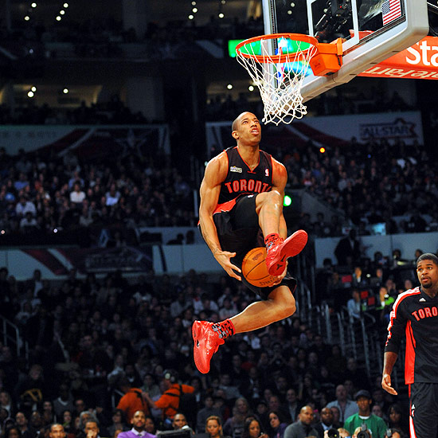

Scoring is the single most important part of Basketball, there are 3 main ways to score: Shooting, layuping and dunking the ball. There are also many advanced variations of these 3, including floaters, fade aways, jellies and windmills.
Shooting
Shooting the ball can either give you two point or three points. In order to recieve 3 points you must shoot the ball from outside of the three point line, you can however land inside the line just as long as your feet are outside the line before you let go of the ball. The way you get two points is by getting a bucket while you are inside the three point line you. Inside the three line you can shoot the ball, layup or dunk.
Layuping
A layup will reward you with 2 points as it is scored inside the three line. A layup is when you drive up to(run towards) the rim and gently "lay" the ball off the backboard into the hoop. There are two main ways to layup, the underhand (finger roll) layup where you have your hand under the ball and you let the abll roll of your fingers. While the second way which is more beginner friendly is the 2 hand layup, to 2 hand layup you simply bring the ball up with both hands and push the ball with you dominant hand.
Dunking
Dunking the ball will also reward you with 2 points. Dunking is something every baller wants to be able to do but what is it exactly. Dunking is jumping up with the ball and forcing the ball through the hoop with one or two hands. You can dunk the ball in many different ways, one hand, two hand and differnet "style dunks" like a windmill or an east bay which is the dunk below
